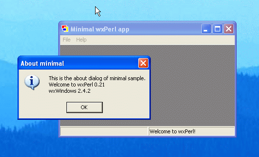

This is the "minimal" sample from the wxPerl distribution (you can
find it in
samples/minimal/minimal.pl). It shows just
a window with a status bar and a menu bar.
Minimal sample (Mac OS X)
Minimal sample (Microsoft Windows 2000)

Minimal sample (Solaris, GTK 1.2); courtesy of Valentin Guignon

Minimal sample (Linux, Motif)

Minimal sample (Windows XP); courtesy of Herbert Breunung
